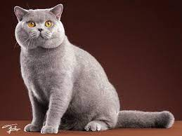
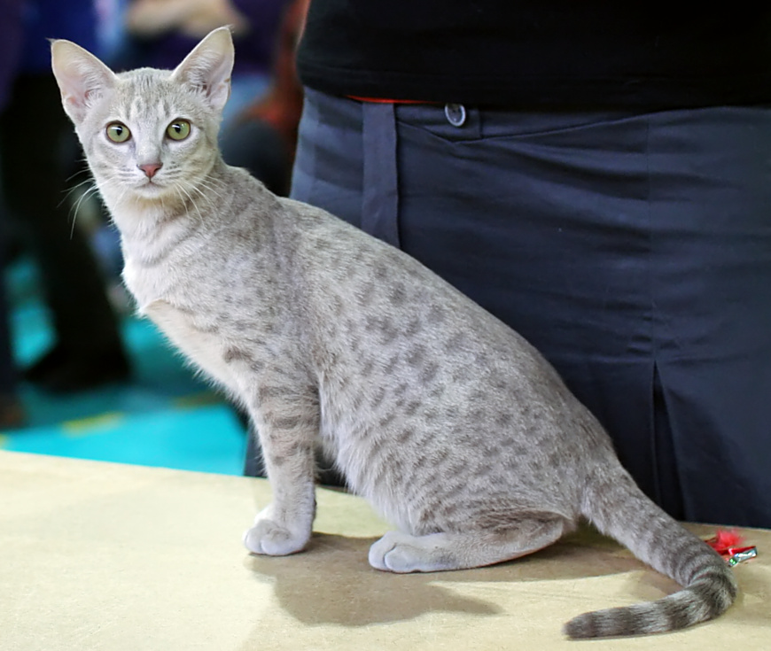
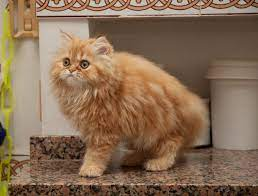
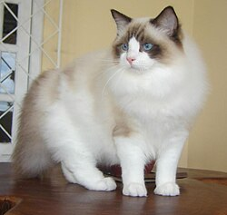
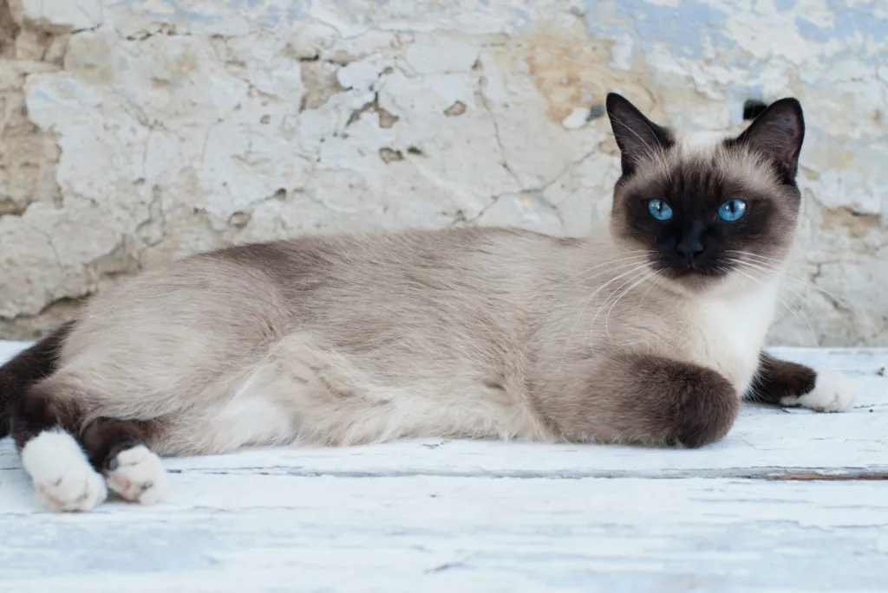

The plush professional. Known for those iconic round cheeks and a calm, dignified "teddy bear" look.

All of the wild spots, none of the wild DNA. A domestic beauty with the spirit of a jungle cat.

The ultimate lap of luxury. Famous for a flowing coat and a sweet, serene expression.

Pure elegance and affection. These blue-eyed beauties are famous for going limp with joy when held.

The vocal socialite. Striking point colors paired with an intelligent, chatty personality.Proof that beauty is skin deep. Warm to the touch and incredibly energetic, they truly stand out in a crowd.